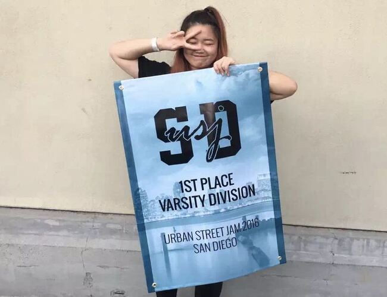
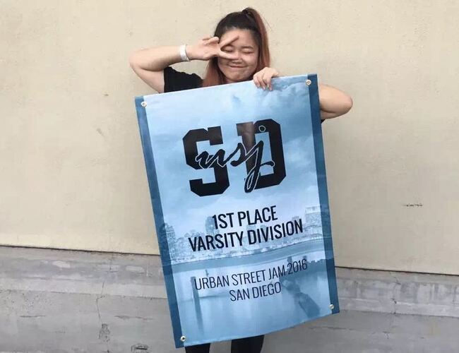

Jasmine Dong
I am a freshman student at UCR majoring in Pre-Business. My goal is to major in marketing and become a commercial designer in the future. In order to reach my goal, I have been taking multiple classes to improve my skills and knowledge of economics and computer science. Classes such as Business 10 and Economics have been improving my ability to understand the economy and its pattern. Classes such as Computer Science have helped improve my ability to use important software such as Excel, Word, and Powerpoint. In the future I would like to take some classes to improve my digital art skills; therefore, bettering my ability to create and establish better artworks.
I am currently working as a cashier in a merchandise store called Daiso Japan for about two years. This particular job experience helped me understand how to understand a company's sales report and taught me how to use money wisely. I started this job during my junior year of high school. After acquiring the job, I was able to pay for my daily expenses and car payment. Furthermore, my first job helped me improve my customer service skills. Every day, there would be some customers that would have problems and issues of our product, as a cashier, my job was to help them and solve their issues professionally. After two years of working, I was able to establish a very professional customer service skill for my customers. As a cashier, my job also included completing and preparing the end of the day sales report for my managers and owners; therefore, I was able to establish the ability to understand and prepare a sales report. This job experience really helped me acquire much knowledge about customers and companies.
Some of my hobbies are video editing and digital art designing; therefore, I am very interested in market designing. During my spare time, I would often edit videos for special occasions, such as for performances, birthday parties, and Youtube videos. For example, I helped a Chinese Lunar Year Performance crew to prepare their background and music for their performance. This particular experience allowed me to know many people that are part of the Chinese Media. With the help of everyone in the crew, we were able to have a successful performance and live show. In addition, I would also post and some of my digital artworks and paintings on social media such as Instagram. All the support from friends and social media inspired me to become a commercial designer. Although I am not a professional artist, I am willing to take classes and improve my skills on digital art software and drawing skills. Personally, I am very interested in marketing and introducing new products. In addition, my passion for art further-on led me on the pathway of becoming a commercial designer. In addition, I am very interested in working in a technology company and help them market their newly developed technologies. In the future, my goal is to help the audience to have a better image of the products that I am marketing.
Experience
Cashier
• Responsible for checking out customers
•Help prepare sales repot and order merchandises
Dance competitor
• Joined multiple dance competitions
• Won many dance competitions such as Max Out, World of Dance, etc
• Helped organize dance classes and sessions for dancers
• Help prepare multiple collaborations and fundraisers
Education
UC Riverside
CHINO HILLS HIGH SCHOOL
MUSCATEL MIDDLE SCHOOL
Portfolio


